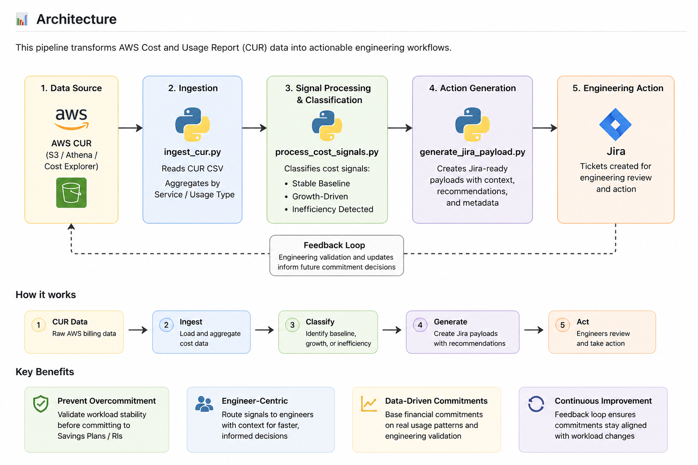

A workflow-native FinOps capability that transforms cost visibility into structured ownership, orchestration, and measurable execution.
Cloud cost visibility alone rarely produces optimization outcomes.
Many organizations identify cost anomalies and savings opportunities but struggle to operationalize remediation due to fragmented ownership, weak workflow integration, and limited execution accountability.
This capability demonstrates how cloud cost signals can move beyond dashboards into structured ownership, workflow orchestration, and measurable engineering action.

AWS CUR → Signal Classification → Jira Workflow Generation → Engineering Validation → Feedback Loop